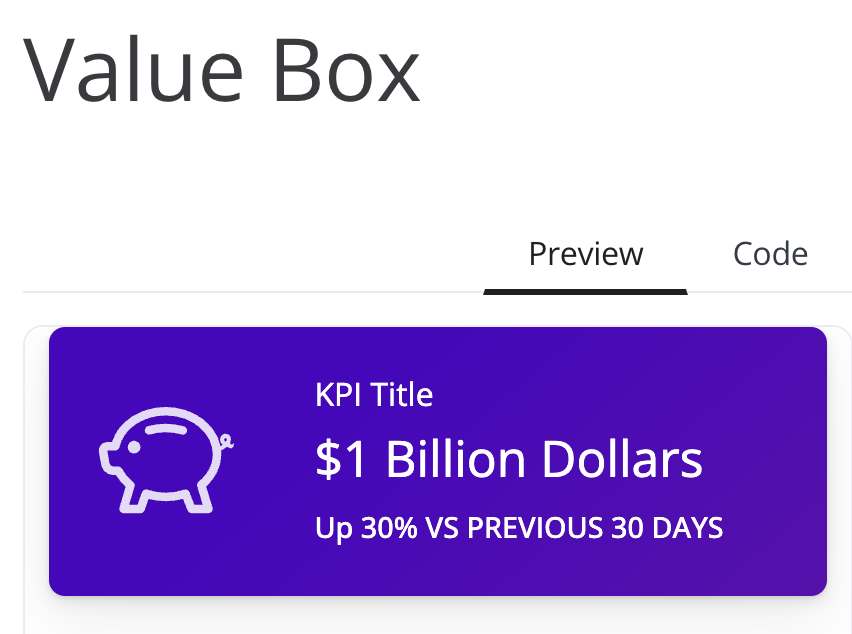
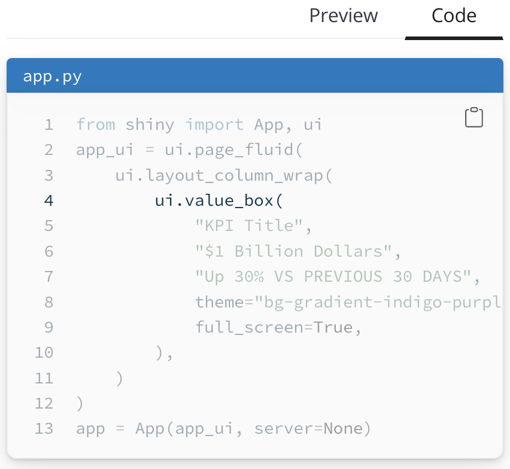
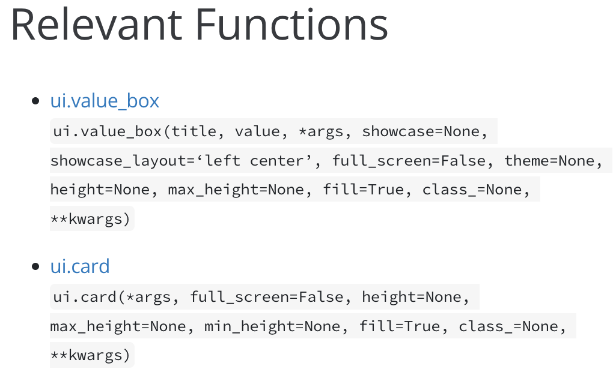
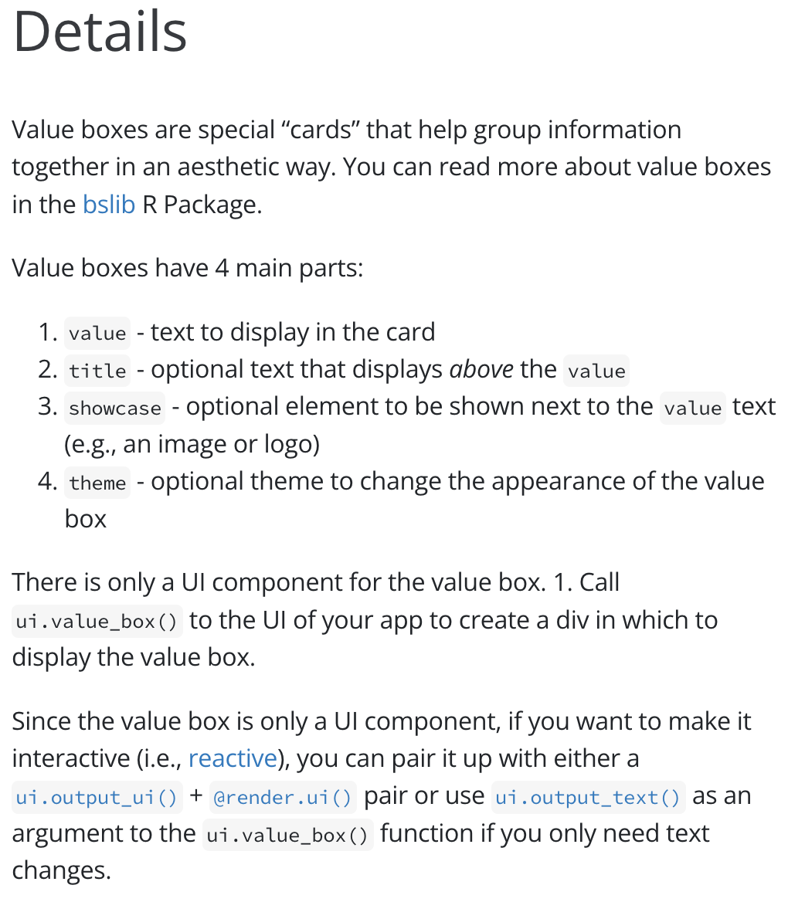
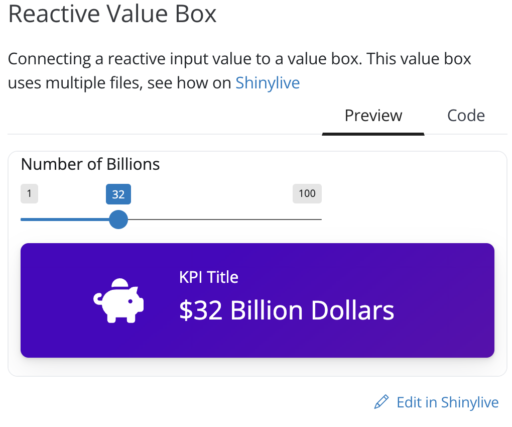
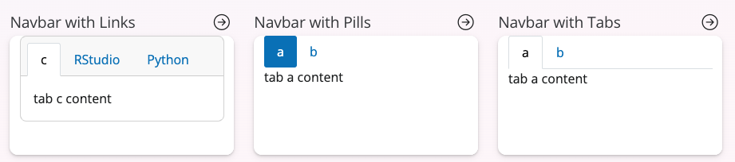
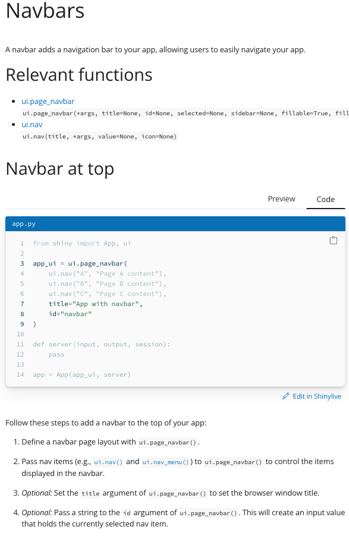

Introducing Shiny for Python Components and Layout Galleries”
We are pleased to announce the components gallery and layouts gallery for Shiny for Python.
The goal of these galleries are to provide:
- an overview of Shiny options for new users, and
- a cheatsheet-like reference for current users that will accelerate how you build Shiny apps
Components Gallery
Each of the components comes with a demo code as well as details on how to use the component, links to documentation, and example variations of the component in action.
The site provides an overview of available Shiny components, as well as details and examples to help you get started. The main components page lists all the input, output, and display components, along with a small demo example of the component’s behavior.
When you click on a component, you’ll see a running example of the component, along with the code used to create the component.

Code highlights reveal the most important lines for creating the component. You can run the example code in Shiny Live and edit it—right in the browser, without having to create or host your own Shiny app. This makes it easy to experiment and see the results!.

Each of the components has a section that links to the documentation pages for the individual functions that are used to build the component. We also provide the function signature right on the page if you just need a quick reference.

For Shiny newcomers, each component also comes with a “Details” section that describes how to use and create the component in your own application. Over time, these Details sections will expand and become a central source of techniques, tips, and best practices related to the component.

Some of the more complex components also have a Variations section. Here you will find code templates for commonly used configurations of the component. Like all of the examples in the gallery, these templates can be edited and run right in the browser, thanks to Shinylive.

Layouts Gallery
We’ve also followed the same display pattern as the components gallery to showcase the diffeernt ways you can do user interface (UI) in the layouts gallery. The main page will list out all the main types of layouts. This gives you an overview of everything you can put into your application, and hoepfully gives you inspiration on what you need for your layout.

Once you know the overall type of style you like, you get the same set of relevant functions, in-browser preview, example code, and detailed instructions, just like each of the components gallery.

All the other UI variations are all displayed in the same page. This let’s you pick the general layout from the main page, and see all the modifications you you can make as you are planning out your application. Just like the components gallery, you can see the layout in action directly on the page, or modify the code as needed and see the results without leaving your browser, with the help of Shinylive.
Check It Out!
Come check out Shiny for Python With the new components and layouts galleries, Shiny has never been easier to use!